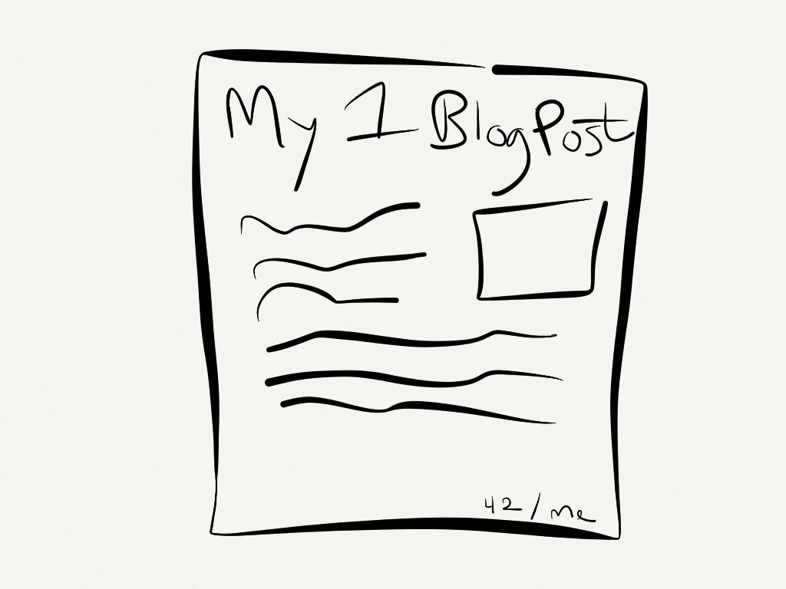

Why is it that we buy digital hats but not blog posts or
web comics? Some artists make money by selling physical
items like posters or t-shirts, but for all-digital content it seems that the
only options of monetizing them are through paywalls or advertising.
I have a few problems with applying these models to my content. By
requiring payment to view it, whatever price I set it to, some people won't
be able to see it. Advertising has many problems : for small sites like mine,
I would gain no measurable benefit in exchange losing control of my site. If
I were to retain control and decide which advertisers to work with, I then
become part of Chomsky's propoganda model, self-censoring myself to
please advertisers.
A proposal
There are other ways. For printed art, atists often mark their works with
a print or edition number. Potentially, we could do this for blog posts and
other digital content by tying a sequence number to a digital currency like
bitcoin.

This would allow for even more flexibility than with physical art. Since
we can track the whole chain of ownership of a particular edition, we can pay
the original author whenever it is sold. By paying the original author, say
30% of the selling price, for each transfer we can keep the original, 1st
edition, at a low price without worrying that it will immediately be sold for
much more!
How might it work?
Since bitcoin and similar currencies create a linear block chain of
transactions with transactions appearing in some order in each block, we
could simply use the convention that each piece of content is assigned a new
address. Any payments to this address will be ordered in some way. Thus, the
first to pay would own the first edition by convention.
A big problem with the ownership by convention method is that editions
cannot be resold. Instead, it would be better to create something like
namecoin, where names can be bought but then editions of those names can be
sold and resold. This would give the most flexibility. If the "names" were
hashes of the document being traded, perhaps this could double as a P2P
distribution method as well?
The way forward
One could pretty easily implement such a monetization method in a
centralized way. Either each individual content creator runs their own store
or a company offers to sell editions as a service. In my opinion, I doubt I
would feel nearly as much personal ownership of an edition with a centralized
solution as I would in a P2P system I partially control. Perhaps then, the
next step is to fork bitcoin, namecoin, ... and start implementing? If we
build it, will people use it?